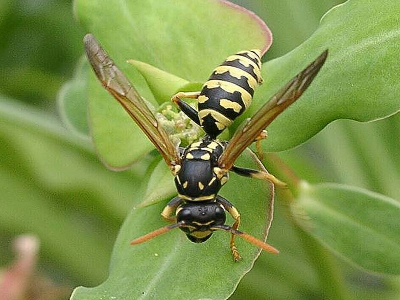

Feldwespe
Polistes gallicus
Feldwespen bauen einreihige und unverhüllte Wabennester, die sie mit kurzem Stiel an Sträuchern befestigen. Sie leben vom Insektenfang. Dem Menschen gegenüber sind die Polistes-Arten friedlich gesinnt.
Feldwespen bauen einreihige und unverhüllte Wabennester, die sie mit kurzem Stiel an Sträuchern befestigen. Sie leben vom Insektenfang. Dem Menschen gegenüber sind die Polistes-Arten friedlich gesinnt.